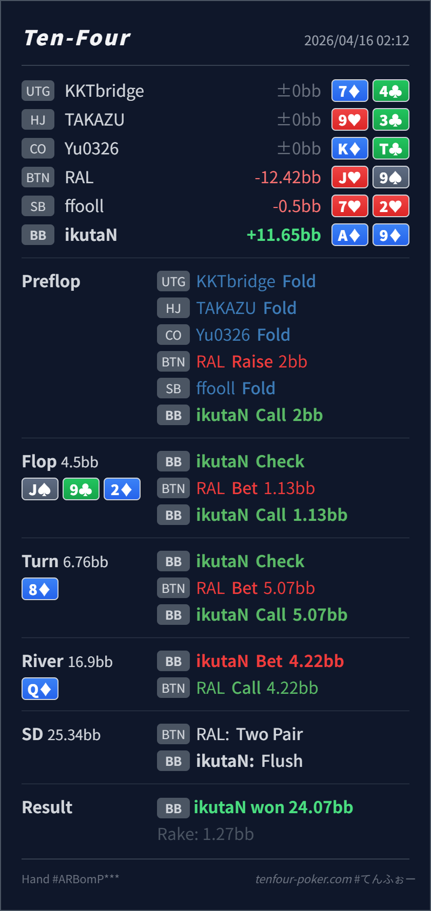

Preflop
良いA♦9♦ はその中でも扱いやすい suited Ax で、明確な defend 候補です。
主論点は、BB defend 後の J♠ 9♣ 2♦ / 8♦ / Q♦ で、turn の A♦9♦ を pair + nut flush draw の強い continue としてどう扱うか、そして river で完成した nut flush を check に回すか小さく lead するかです。結論は、preflop defend、flop call、turn call、river の small lead は全体としてかなり自然です。いちばん大事なのは、turn で hand がかなり強くなっても raise を急がず、river では scare card で相手の check-back が増えるぶん自分から取りにいく発想を持つことです。
A♦9♦J♥9♠J♠ 9♣ 2♦ / 8♦ / Q♦A♦9♦ defend は標準的で、J♠ 9♣ 2♦ の 25%pot c-bet への call も middle pair + nut backdoor を持つ自然な continue です。8♦ の 75%pot barrel に対して A♦9♦ は pair + nut flush draw のかなり強い defend です。raise で守りにいくより、call で相手の bluff と薄い value を残す方がきれいです。Q♦ は BTN の one-pair / two-pair を betting しにくくする scare card なので、BB が nut flush で small lead を持つのはかなり理にかなっています。4.22BB は Qx, Jx, J9, diamond 1枚持ちに広く払ってもらいやすいサイズです。A♦9♦J♥9♠2BB, BB callJ♠ 9♣ 2♦ / 8♦ / Q♦1.13BB, BB call5.07BB, BB call4.22BB, BTN call
良いA♦9♦ はその中でも扱いやすい suited Ax で、明確な defend 候補です。
J♠ 9♣ 2♦良い
Hero は middle pair に加えて nut backdoor を持ち、check-call の中核に入る combo です。
8♦良いA♦9♦ は pair + nut flush draw のかなり強い continue で、実現値も高いです。
Q♦良い
Hero は nut flush で clear value です。check でも受けられますが、自分から lead して取りにいく価値が高いです。
| 論点 | その場で起きがちな見え方 | どこがズレたか | 次回の基準 |
|---|---|---|---|
turn の A♦9♦ | pair に nut flush draw まで付いたので、protection も兼ねて raise したくなる | この combo はかなり強いですが、すでに showdown value があり、raise にすると BTN の air や薄い barrel を降ろしやすくなります。turn の大サイズに対しては、まず強い call bucket として扱う方が素直です。 | 強い draw になった と raise が必要 を分けて考え、相手の bluff を残せるなら call baseline を優先する |
| river の nut flush | 完成役なので check で誘うか、大きく打つかの二択に見えやすい | Q♦ は BTN 側の one-pair や two pair にとってかなり betting しにくい scare card です。こちらは nut flush を含めて lead を持てるので、small lead で check-back されやすい value を回収する発想がかなり有力です。 | scare river では 相手が自分から打ちにくいか を先に見て、nut 級は small lead も自然に候補へ入れる |
| ストリート | その時点の見え方 | 実ハンドの位置づけ | 評価 | その場の一手 |
|---|---|---|---|---|
| Preflop | BTN min-open range は広く、BB は suited Ax や broadway、connected hand をかなり広く defend できます。 | A♦9♦ はその中でも扱いやすい suited Ax で、明確な defend 候補です。 | 良い | Call で問題ありません。 |
Flop J♠ 9♣ 2♦ | BTN の 25%pot c-bet には Jx、overcard、A-high、backdoor がかなり広く残ります。 | Hero は middle pair に加えて nut backdoor を持ち、check-call の中核に入る combo です。 | 良い | raise を急がず、まずは check-call で十分です。 |
Turn 8♦ | BTN の 75%pot barrel で range はやや極化しますが、diamond semibluff と強めの one-pair もまだ残ります。 | A♦9♦ は pair + nut flush draw のかなり強い continue で、実現値も高いです。 | 良い | ここは check-call が本線です。raise より相手の bluff を残せます。 |
River Q♦ | 3枚目 diamond と overcard の Q で、BTN は one-pair を自分から thin value しにくくなります。 | Hero は nut flush で clear value です。check でも受けられますが、自分から lead して取りにいく価値が高いです。 | 良い | 4.22BB の small lead は自然です。sticky 相手なら少しだけ大きくしてもよいです。 |
call でどれだけ bluff を残せるか を見ると turn の判断が安定します。打ちにくくもなる ので、OOP の value lead がかなり機能します。A♦9♦ のような nut flush はかなり前向きに lead してよいです。逆に calling station 気味なら、もう少し大きい size も候補にできます。